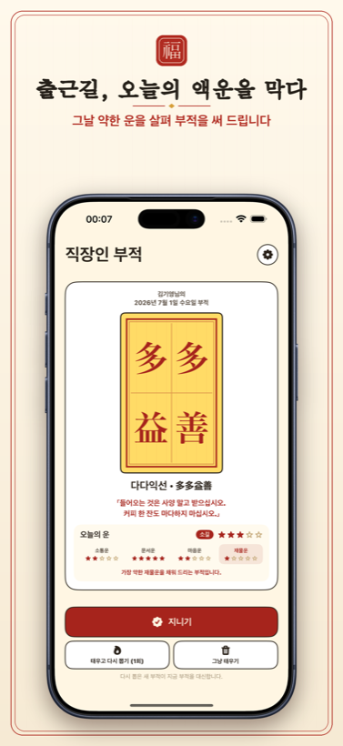
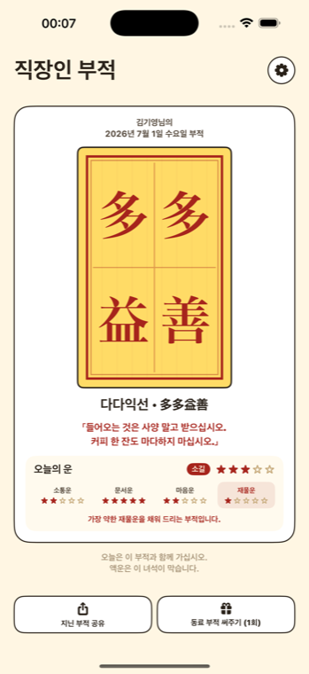
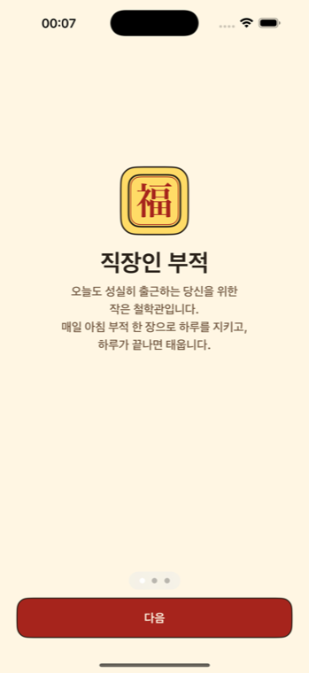
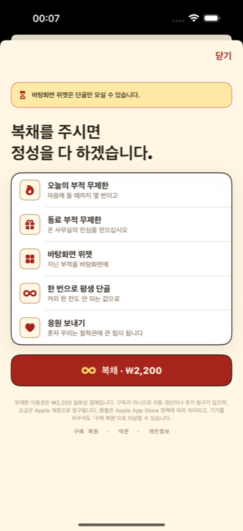

능청맞은 철학관 도사가 그대의 오늘 운을 살펴, 가장 약한 곳을 채워 줄 사자성어 부적을 한 자 한 자 써 드립니다. 점집의 엄숙함 대신, 직장인의 하루에 웃음 한 줌.
광고 없음 · 계정 없음 · 모든 부적은 기기 안에만.
오늘의 총운 · 소길 小吉 · ★★★☆☆
만사형통 · 萬事亨通
「오늘은 무엇을 하든 술술. 결재도, 회의도, 그리고 칼퇴도.」
행운의 색
행운의 수
八
행운의 방위
南
소통·문서·마음·재물, 그리고 종합운까지. 별점으로 한눈에 보고, 대길·중길·소길·말길·평운으로 오늘의 기운을 가늠하세요. 그리고 가장 약한 곳에 딱 맞는 부적이 처방됩니다.
소통운
★★★★★
회의도 잡담도 오늘은 무난.
문서운
★★★★★
결재·보고서, 한 번에 통과.
마음운
★★★★★
평정심을 살짝 챙길 것.
재물운
★★★★★
지갑이 얇은 날. 부적으로 채웁니다.
처방그날 가장 약한 운에 맞춰 사자성어 부적이 처방됩니다. 萬事亨通, 大吉運數처럼 넉 자가 부적 도상에 또렷이 새겨집니다.
오늘 받은 부적이 영 아니다 싶으면, 태우고 다시 뽑을 수 있습니다. 하루가 끝나면 부적은 조용히 사라집니다.
이름을 적으면 그 동료 몫으로 부적을 써 줍니다. 사무실의 민심은, 이런 데서 납니다.
완성된 부적을 이미지로 저장·공유하고, 지닌 부적을 홈 화면 위젯으로 모실 수 있습니다.




매일 아침, 출근길에 부적 한 장.
App Store · 곧 출시